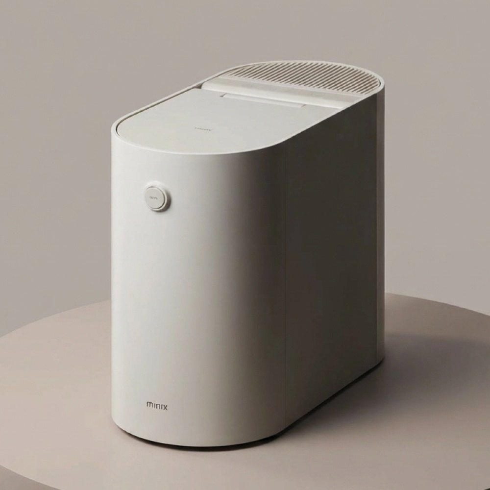
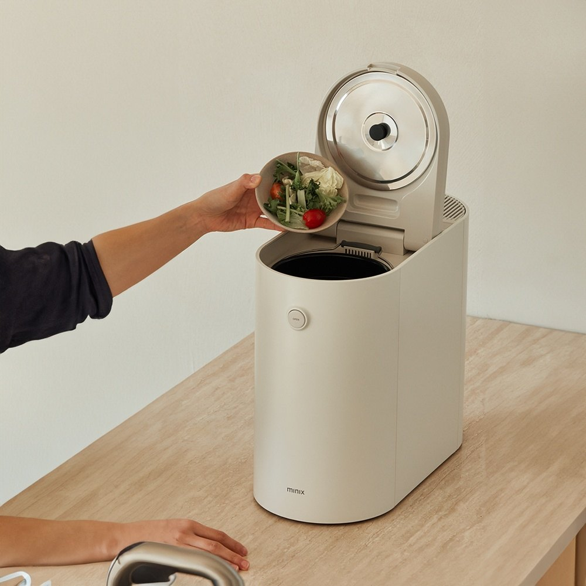
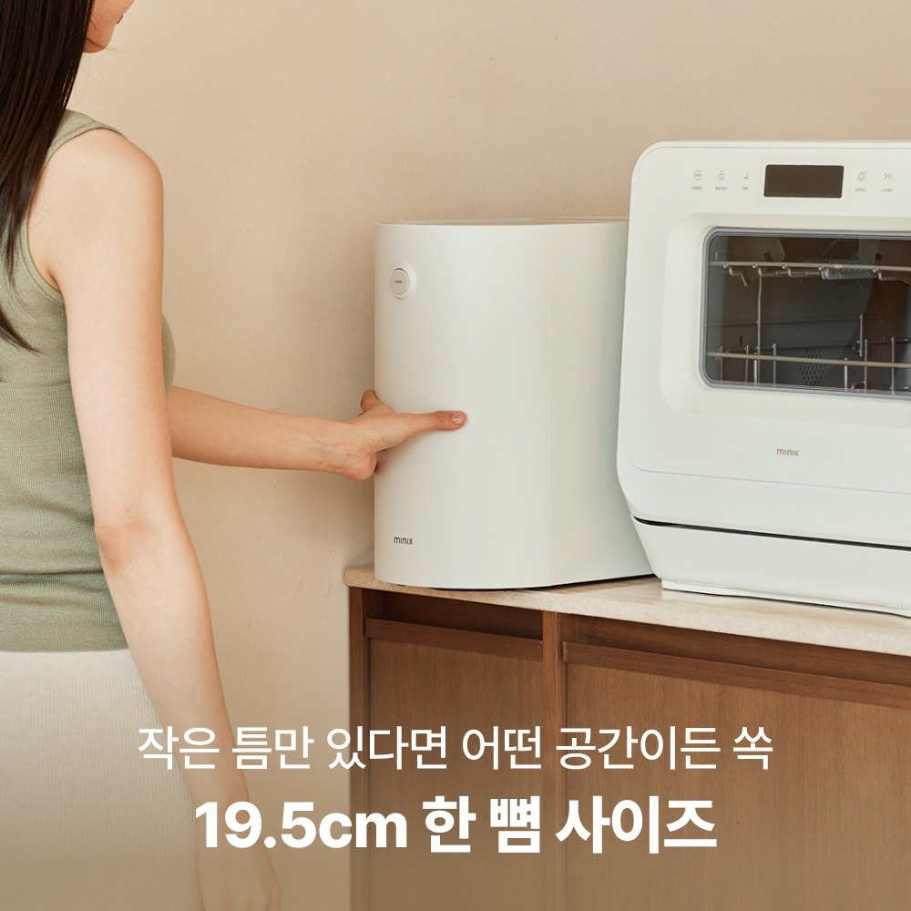

Minix The Plender PRO Review: Overview
This Minix The Plender PRO review covers a countertop food waste dryer and grinder from Korean brand Minix (model MNFD-120G). In Korea, apartment kitchens are small and food waste goes out in separate bags, so a machine that shrinks scraps down is a popular upgrade. The Plender PRO holds up to 2L, which Minix pitches for a 2–3 person household.
It uses a 300W motor to dry and grind food scraps. Minix says the result is a dry, powder-like crumble that takes up far less space than wet scraps.


How the 3-Stage Process Works
Minix describes a 3-stage process that dries and grinds the scraps. The idea is to cut volume a lot, so you take out the food waste far less often. The product graphic shows a jar of fresh vegetables next to a much smaller layer of dried output, labeled 93%.
- Fully automatic: The listing says storage, processing and power saving are automatic, so there's no button to push each time.
- One-button control: Auto-detection handles the cycle.
- Low noise and odorless: That's how Minix markets it. It's a brand claim, so expect some sound during grinding.
Specs at a Glance
| Spec | Minix The Plender PRO (MNFD-120G) |
|---|---|
| Type | Home food waste dryer + grinder |
| Capacity | Up to 2L (2–3 person household) |
| Motor | 300W |
| Process | 3 stages: dry and grind |
| Width | 19.5cm slim body |
| Operation | Fully automatic storage, processing and power saving; one button; auto-detect |
| Output | Dry, powder-like crumble |
| Market | Sold in Korea; check voltage and plug before use abroad |

Pros & Cons
✅ Pros
- Dries and grinds scraps, so the bin shrinks a lot and smells less between trash days.
- Fully automatic operation. You just drop in scraps.
- A 19.5cm slim body fits a small Korean-style counter.
- 2L capacity suits couples and small families.
⚠️ Cons
- 2L may be too small for big families or heavy home cooks.
- Low noise and no odor are brand claims, so the real-world sound level isn't verified here.
- It's a Korean-market model, so it may not be on US Amazon and may need a different voltage.
- Check your local rules for disposing of the dried output.
Who It Suits (and Who Should Skip It)
- Great for: Apartment dwellers who hate smelly food-waste bins between collection days.
- Great for: 2–3 person homes that cook a few times a week.
- Maybe skip: Large households that make a lot of scraps every day. A bigger unit may suit you better.
- Maybe skip: If you already compost outdoors and don't need to shrink your scraps.
Minix Plender PRO FAQ
What does the Minix The Plender PRO do?
It's a countertop food waste processor that dries and grinds food scraps in three stages. The Korean listing says it greatly reduces the volume, and the dried result crumbles like powder.
How much food waste can it hold?
The maximum capacity is 2L, which Minix says is enough for a 2–3 person household.
Is it loud or smelly?
Minix markets it as low-noise and odorless. That's the brand's claim, so expect some sound while it grinds.
Do I need to press a button every time?
No. The listing says storage, processing and power saving are fully automatic, with one-button operation and auto-detection.
Can I buy the exact model on US Amazon?
The MNFD-120G is sold for the Korean market. Our Amazon link goes to a general search for electric kitchen food waste processors, and you should check the voltage and plug before using any Korean appliance abroad.
Electric Kitchen Food Waste Processors
The exact Korean model may not be on US Amazon, so this link searches for similar countertop units.